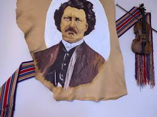

What Our Customers Say

Jean-Baptiste Larocque
★★★★★ Excellent Quality
I have worn my Red River sash on three expeditions to the Athabasca country, and it has proven indispensable. The weaving is tight and strong, the colors remain bright despite hard use, and it has saved my life twice when used as rope. I recommend it without reservation to any man heading into the wilderness.

Marie Delorme
★★★★★ Beautiful Craftsmanship
My husband returned from Fort Garry with this magnificent sash, and I must say it is the finest example of weaving I have ever seen. The colors are vibrant, the pattern intricate, and the workmanship exceptional. It has become his most prized possession and draws admiration wherever he wears it.

Thomas McKay
★★★★★ Worth Every Penny
As a trader of twenty years experience, I have seen many sashes, but none compare to those from Red River. The quality is unmatched, and the investment is sound. This sash will last a lifetime and beyond. I have already ordered three more for my sons.